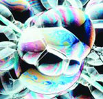
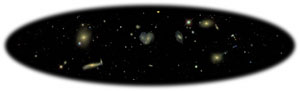
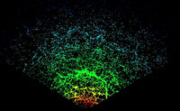

The Science of the SDSS
 The universe today is
filled with sheets of galaxies curving through mostly empty space. Like
soap bubbles in a sink, they form voids and come together along lines that
form dense filaments. Our best model for how the universe began, the Big
Bang, gives us a picture of a universe filled with a hot, uniform soup of
fundamental particles. Somehow, between the time when the universe began
and today, gravity has pulled together the matter into regions of high
density, leaving behind empty voids. What triggered this change from
uniformity to structure? Understanding the origin of the structure that we
see in the universe today is a crucial part of reconstructing our cosmic
history.
The quest is made more difficult because the luminous stars and
galaxies that we see are only a small part of the total material in the
universe. The nature, amount and distribution of the "dark matter" are
among the most important questions in astrophysics. Astronomers want to
know how the gravity from dark matter has influenced the visible
structures. By carefully mapping the positions and motions of galaxies,
astronomers can reconstruct the distribution of the gravitating mass, and
from that find clues about dark matter.
A map of the Universe
One of the difficulties in studying the entire universe is the problem
of getting enough information to assemble a complete picture. Astronomers
designed the Sloan Digital Sky Survey (SDSS) to address this problem in a
direct and ambitious way, by gathering a body of data large and accurate
enough to be useful in addressing a broad range of astronomical
questions.
SDSS is obtaining high-resolution pictures of one quarter of
the entire sky in five different colors. From these pictures, advanced
image processing software is measuring the shape, brightness and color of
hundreds of millions of astronomical objects including stars, galaxies,
quasars (compact yet ultraluminous objects thought to be powered by
material falling into giant black holes), and an array of other celestial
exotica. Follow-up observations of selected galaxies and quasars are done
using an instrument called a spectrograph. This spectroscopic
data is then used to determine accurate distances to a million galaxies and
100,000 quasars, and to provide a wealth of information about the
individual objects. These data give the astronomical community one of the
things it most needed: a comprehensive catalog of the constituents of a
representative part of the universe.
SDSS is mapping the three-dimensional
distribution of matter through a volume about a hundred times bigger
than the volume explored so far. This map will reveal how big the
largest structures in our universe are, and what they look like. It
will help us understand the mechanisms that converted a uniform
"primordial soup" into a frothy network of galaxies.

An intergalactic census
The U.S. Census Bureau collects statistical information about how many
people live in the United States, where they live, their race, their family
income and other characteristics. The Census becomes a primary source of
information for people trying to understand the nation. In a sort of
celestial census, the SDSS is gathering information
about how many galaxies and quasars there are in the universe, how they
are distributed, their individual properties and how bright they are.
Astronomers use this information to study questions such as why flat
spiral galaxies are found in less dense regions of the universe than
football-shaped elliptical galaxies, or how the enigmatic quasars have
changed during the history of the universe.
The SDSS is also collecting information about the Milky Way
galaxy and even about our own solar system. The wide net cast by its
telescope sweeps up as many stars as galaxies, and as
many asteroids in our solar system as quasars in the universe.
Knowledge of these objects help us learn how stars are distributed
in our galaxy, and where asteroids fit into the history of our solar
system.
Needles in a haystack, lighthouses in the fog
Rare objects, almost by definition, are scientifically interesting. By
sifting through the several hundred million objects recorded by the SDSS,
scientists are constructing entire catalogs of the most distant
quasars, the rarest stars and the most unusual galaxies. For example,
stars with a chemical composition very low in metals like iron are the
oldest in the Milky Way. They can therefore tell us about the formation
of our galaxy. However, such stars are also extremely rare. Only a
wide-field deep sky survey can find enough of them to form a coherent
picture.
Because they are so far away, quasars can serve as probes for
intergalactic matter throughout the visible universe. In particular,
astronomers can identify and study galaxies by the way they block
certain wavelengths of light emitted by a quasar. Using the light from
quasars, SDSS detects tens of thousands of galaxies in the
initial stages of formation. These galaxies are typically too faint and
too diffuse to be detected in their own light by even the largest of
telescopes. Quasar probes also allow scientists to study the
evolution of the chemistry of the universe throughout its history.
The telescope as a time machine
Peering into the universe with a telescope allows us to look not only
out into space, but also back in time. Imagine intelligent beings in a
planetary system around a star 30 light years away. Suppose these beings
pick up a stray television transmission from Earth. They would see events
now 30 years past on earth, and might, for instance, view a newscast
covering the construction of the foundation of the Sears Tower. While
today we see the tower as a completed work, they might see workmen pouring
the tower's foundation. We think of light as traveling extremely fast,
but the universe is a very big place. In fact, astronomers routinely look
at quasars that are so far away that it takes billions of years for the
light they produce to reach us. When we look at galaxies or quasars that
are billions of light-years away, we are seeing them as they were billions
of years ago.
By looking at galaxies and quasars at different distances, astronomers
can see how their properties change with time. SDSS is measuring
the "local" distribution of galaxies, which allows for comparison with
more distant samples obtained by instruments like the Hubble Space
Telescope and the Keck Telescope.
Because quasars are very bright, SDSS allows astronomers to
study their evolution through more than 90 percent of the history of the
universe.
Measuring distance and time: redshift
 Think of the universe as
a loaf of raisin bread rising in an oven. The universe is expanding in the
same way as the rising loaf. Now pick any raisin, and imagine it's our
own Milky Way galaxy. No matter how you look at it, as the bread rises,
all the other raisins are moving away from our raisin. The farther away
another raisin is from our raisin, the faster it is moving away. In the
same way, all of the other galaxies are moving away from ours as the universe
expands. And because the universe is uniformly expanding, the farther a
galaxy is from Earth, the faster it is receding from us.
Think of the universe as
a loaf of raisin bread rising in an oven. The universe is expanding in the
same way as the rising loaf. Now pick any raisin, and imagine it's our
own Milky Way galaxy. No matter how you look at it, as the bread rises,
all the other raisins are moving away from our raisin. The farther away
another raisin is from our raisin, the faster it is moving away. In the
same way, all of the other galaxies are moving away from ours as the universe
expands. And because the universe is uniformly expanding, the farther a
galaxy is from Earth, the faster it is receding from us.
The light coming to us from these distant objects is shifted toward the
red end of the electromagnetic spectrum, in much the same way the sound of
a train whistle changes as a train leaves a station,
compared to the way the pitch is perceived when the train is in the
station. The faster a distant object is moving, the more it is
redshifted. Astronomers measure the amount of redshift in the spectrum
of a galaxy to figure out how far away it is from us.
By measuring the redshift of a million galaxies, the Sloan Digital Sky
Survey is creating a three-dimensional picture of our local neighborhood
of the universe.
